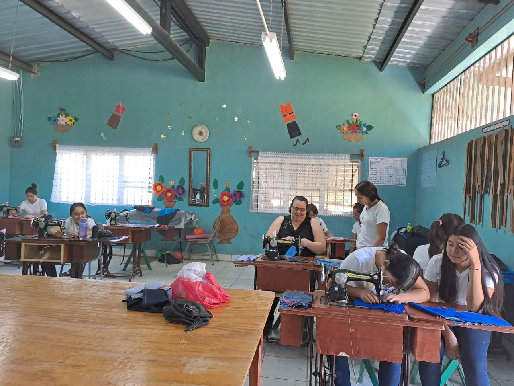

Un taller de hogar es un espacio dedicado a la realización de actividades relacionadas con el mantenimiento, reparación, y creación de objetos y estructuras para el hogar. Es un lugar donde las personas pueden trabajar en proyectos de bricolaje, carpintería, electricidad, fontanería, jardinería y otros oficios relacionados con la mejora y el mantenimiento del hogar.
Estos talleres suelen estar equipados con herramientas manuales y eléctricas, así como con materiales y suministros necesarios para llevar a cabo una amplia gama de proyectos. Además, pueden contar con bancos de trabajo, mesas de corte, áreas de almacenamiento y otras instalaciones para facilitar el trabajo.
En un taller de hogar, los aficionados al bricolaje y los profesionales pueden trabajar en proyectos tanto pequeños como grandes, desde la reparación de muebles hasta la construcción de estructuras personalizadas. Es un lugar donde la creatividad y la habilidad manual se combinan para mejorar y embellecer los espacios de vida.
